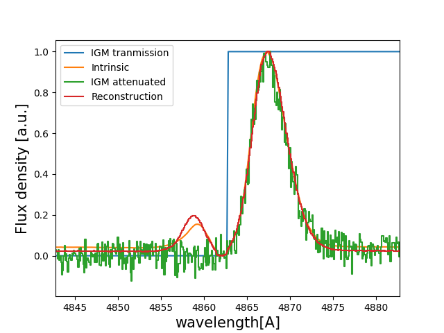
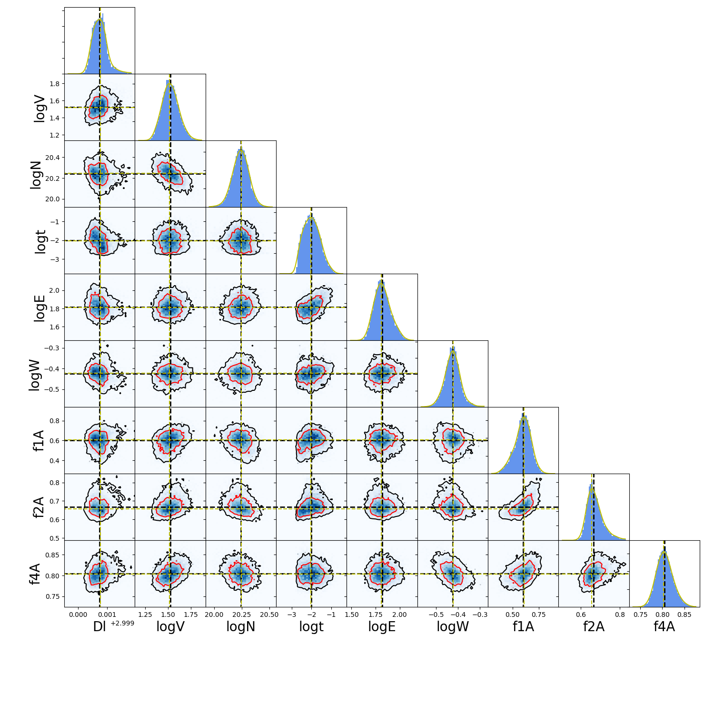

Tutorial : Fitting a IGM/CGM attenuated line profile using deep learning
In this tutorial you will, hopefully, learn how fit Lyman-alpha line profiles using deep learning with zELDA.
Getting started
Let’s start by loading zELDA creating a mock line profile that we will fit later. For more details on how to create a mock line profile go to Mock line profiles
>>> import Lya_zelda_II as Lya
>>> import numpy as np
>>> your_grids_location = '/This/Folder/Contains/The/Grids/'
>>> Lya.funcs.Data_location = your_grids_location
>>> Geometry = 'Thin_Shell_Cont'
>>> LyaRT_Grid = Lya.load_Grid_Line( Geometry )
>>> # Defining the model parameters:
>>> z_t = 3.0 # redshift of the source
>>> V_t = 50.0 # Outflow expansion velocity [km/s]
>>> log_N_t = 20. # Logarithmic of the neutral hydrogen column density [cm**-2]
>>> t_t = 0.01 # Dust optical depth
>>> log_EW_t = 1.5 # Logarithmic the intrinsic equivalent width [A]
>>> W_t = 0.5 # Intrinsic width of the line [A]
>>> F_t = 1. # Total flux of the line
>>> # Defining the quality of the line profile:
>>> PNR_t = 20.0 # Signal to noise ratio of the maximum of the line.
>>> FWHM_t = 0.1 # Full width half maximum diluting the line. Mimics finite resolution. [A]
>>> PIX_t = 0.1 # Wavelength binning of the line. [A]
>>> np.random.seed(5) # Set a numpy random seed.
where /This/Folder/Contains/The/Grids/ is the place where you store the LyaRT data grids, as shown in the installation section.
Now let’s create an IGM transmission curve. For this example we are going to set the IGM transmission bluer than Lyman-alpha to 0 and for redder than Lyman-alpha to 1.
>>> w_Lya = 1215.68
>>> w_IGM_rest_Arr = np.linspace( w_Lya-20.0 , w_Lya+20.0 , 1000 )
>>> T_IGM_Arr = np.ones( len( w_IGM_rest_Arr ) )
>>> T_IGM_Arr[ w_IGM_rest_Arr < w_Lya ] = 0
Now let’s generate the observed Lyman-alpha line profile:
>>> w_IGM_Arr , f_IGM_Arr , s_IGM_Arr , info = Lya.Generate_a_real_line( z_t , V_t, log_N_t, t_t, F_t, log_EW_t, W_t , PNR_t, FWHM_t , PIX_t , LyaRT_Grid, Geometry , T_IGM_Arr=T_IGM_Arr , w_IGM_Arr=w_IGM_rest_Arr , RETURN_ALL=True )
w_IGM_Arr is a numpy array that contains the wavelength where the line profile is evaluated. Meanwhile, f_IGM_Arr is the actual line profile. s_IGM_Arr is the uncertainty of the flux density. info is a python dictinary that contains a lot of information about how the line was computed, like the ideal line profile, the true IGM escape fraction, etc. Remeber that if you want to use the line profile grid with lower RAM memory occupation you must pass MODE=’LIGHT’ to Lya.load_Grid_Line.
We can obtain the intrinsic line profile with ideal conditions as…
>>> w_INT_Arr = info[ 'w_obs' ] # wavelength array of the intrinsic line
>>> f_INT_Arr = info[ 'Intrinsic' ] # flux array of the intrinsic line
The true IGM escape fraction is…
>>> print( info['f_IGM_4.0'] )
>>> 0.8827655503368276
Let’s rescale the lines so that they have a comparable amplitude:
>>> s_IGM_Arr = s_IGM_Arr * 1. / np.amax( f_IGM_Arr )
>>> f_IGM_Arr = f_IGM_Arr * 1. / np.amax( f_IGM_Arr )
>>> f_INT_Arr = f_INT_Arr * 1. / np.amax( f_INT_Arr )
Let’s have a look to how the line looks:
>>> w_IGM_pix_Arr , f_IGM_pix_Arr = Lya.plot_a_rebinned_line( w_IGM_Arr , f_IGM_Arr , PIX_t )
>>> import pylab as plt
>>> plt.plot( w_IGM_rest_Arr*(1+z_t) , T_IGM_Arr , label='IGM tranmission' )
>>> plt.plot( w_INT_Arr , f_INT_Arr , label='Intrinsic' )
>>> plt.plot( w_IGM_pix_Arr , f_IGM_pix_Arr , label='IGM attenuated' )
>>> plt.legend(loc=0)
>>> plt.xlabel('wavelength[A]' , size=15 )
>>> plt.ylabel('Flux density [a.u.]' , size=15 )
>>> plt.xlim( ( w_Lya - 5 ) * (1+z_t) , ( w_Lya + 5 ) * (1+z_t) )
>>> plt.show()
{kind=link}
Now that we have our mock line profile, let’s fit it. In this example we are going to use MODE=’IGM-z’. There are three possible modes: MODE=’IGM+z’ , MODE=’IGM-z’ and MODE=’NoIGM’ . Each of these MODE use a differente NN with a different training set. MODE=’IGM+z’ is trained so that the IGM transmission curves in the training set match the real IGM evolution with redshift. MODE=’IGM-z’ uses an IGM that is constant with redshift, and therefore it is more unbiased to redshift dependence than MODE=’IGM+z’. Note that MODE=’IGM+z’ should be baised towards reallity. Then, MODE=’NoIGM’ was trained wihtout the IGM absorption, only the ISM part.
>>> N_ITER = 10000 # Number of times to pertube the line profile
>>> RESULTS = Lya.Fit_Observed_line_with_IGM( w_IGM_Arr , f_IGM_Arr , s_IGM_Arr , PIX_t , FWHM_t , MODE='IGM-z' , N_ITER=N_ITER )
The function Fit_Observed_line_with_IGM is used to fit 1 line and it loads the NN and PCA models every time that it is called. This is not a problem if only a handful of lines are fitted at the same time. However, if the user wants to fit many lines, it could be better to load the NN and PCA models outside the function and pass it as an agument. This is done as…
>>> DIC_loaded_models , my_PCA_model = Lya.Pipieline_Zelda_2_Load_Models( 'IGM-z' )
>>> RESULTS = Lya.Fit_Observed_line_with_IGM( w_IGM_Arr , f_IGM_Arr , s_IGM_Arr , PIX_t , FWHM_t , MODE='IGM-z' , N_ITER=N_ITER , DIC_loaded_models=DIC_loaded_models , my_PCA_model=my_PCA_model )
RESULTS is a python dictionaty that stores all the information of the fit. The percentile 50 is stores as… x_Q50, the perntile 16 as x_Q16, etc, where x is a fitted varible, like redshift, etc. Therefore, the fitted outflow values are
>>> z_sol = RESULTS[ 'z_Q50' ] #redshift
>>> log_V_sol = RESULTS[ 'logV_Q50' ] # logarith of expansion velocity.
>>> log_N_sol = RESULTS[ 'logN_Q50' ] # logarith of neutral hydrogen column density.
>>> log_t_sol = RESULTS[ 'logt_Q50' ] # logarith of dust optical depth.
>>> log_E_sol = RESULTS[ 'logE_Q50' ] # logarith of intrinsic equivalent width.
>>> log_W_sol = RESULTS[ 'logW_Q50' ] # logarith of intrinsic width.
>>> f_ig1_sol = RESULTS[ 'f1A_Q50' ] # IGM Lya escape fraction 1A arround Lya.
>>> f_ig2_sol = RESULTS[ 'f2A_Q50' ] # IGM Lya escape fraction 2A arround Lya.
>>> f_ig4_sol = RESULTS[ 'f4A_Q50' ] # IGM Lya escape fraction 4A arround Lya.
Then, the measured IGM Lya escape fraction 4A arround Lya. is…
>>> print( RESULTS['f4A_Q50'] , '+-' , RESULTS['f4A_Q84']-RESULTS['f4A_Q16'] )
>>> 0.8047662675380707 +- [0.06671568]
We can compute the solution line profile as…
>>> w_SOL_OBSERVED_Arr , f_SOL_OBSERVED_Arr , s_SOL_OBSERVED_Arr , sol_info = Lya.Generate_a_real_line( z_sol , 10**log_V_sol , log_N_sol, 10**log_t_sol, F_t, log_E_sol, 10**log_W_sol , 1000. , FWHM_t , PIX_t , LyaRT_Grid, Geometry , RETURN_ALL=True )
And we can plot it to compare with the actual intrinsic line profile:
>>> f_SOL_OBSERVED_Arr = f_SOL_OBSERVED_Arr * 1. / np.amax(f_SOL_OBSERVED_Arr) # rescaling to be comparable
>>> w_SOL_OBSERVED_pix_Arr , f_SOL_OBSERVED_pix_Arr = Lya.plot_a_rebinned_line( w_SOL_OBSERVED_Arr , f_SOL_OBSERVED_Arr , PIX_t )
>>> plt.plot( w_IGM_rest_Arr*(1+z_t) , T_IGM_Arr , label='IGM tranmission' )
>>> plt.plot( w_INT_Arr , f_INT_Arr , label='Intrinsic' )
>>> plt.plot( w_IGM_pix_Arr , f_IGM_pix_Arr , label='IGM attenuated' )
>>> plt.plot( w_SOL_OBSERVED_pix_Arr , f_SOL_OBSERVED_pix_Arr , label='Reconstruction' )
>>> plt.legend(loc=0)
>>> plt.xlabel('wavelength[A]' , size=15 )
>>> plt.ylabel('Flux density [a.u.]' , size=15 )
>>> plt.xlim( ( w_Lya - 5 ) * (1+z_t) , ( w_Lya + 5 ) * (1+z_t) )
>>> plt.show()
You should get something like:
{kind=link}
RESULTS also contains all the chain information for each of the noise perturbations in RESULTS[‘All’]. Let’s plot the chains. For that we will use the functions…
def get_extremes_of_a_prop( prop_Arr ):
Q_top = 99.9
Q_low = 0.1
y_prop_min = np.percentile( prop_Arr , Q_low )
y_prop_50 = np.percentile( prop_Arr , 50 )
y_prop_max = np.percentile( prop_Arr , Q_top )
mask_y = ( prop_Arr > y_prop_min ) * ( prop_Arr < y_prop_max )
y_min = y_prop_50 - 4.*np.std( prop_Arr[ mask_y ] )
y_max = y_prop_50 + 4.*np.std( prop_Arr[ mask_y ] )
return y_min , y_max
def make_corner_plots( my_chains_matrix ):
import numpy as np
import pylab as plt
from scipy.ndimage import gaussian_filter1d
N_dim = len( machine_names )
N_pix_smooth = 2
NNN_bins = 50
ax_list = []
label_list = machine_names
MAIN_VALUE_mean = np.zeros(N_dim)
MAIN_VALUE_median = np.zeros(N_dim)
MAIN_VALUE_MAX = np.zeros(N_dim)
SMOO_VALUE_MAX = np.zeros(N_dim)
for i in range( 0 , N_dim ):
x_prop = my_chains_matrix[ : , i ]
x_prop_min , x_prop_max = get_extremes_of_a_prop( x_prop )
x_min = x_prop_min
x_max = x_prop_max
mamamask = ( x_prop > x_min ) * ( x_prop < x_max )
MAIN_VALUE_mean[ i] = np.mean( x_prop[ mamamask ] )
MAIN_VALUE_median[i] = np.percentile( x_prop[ mamamask ] , 50 )
HH , edges_HH = np.histogram( x_prop[ mamamask ] , NNN_bins , range=[ x_prop_min , x_prop_max ] )
new_H_Arr = gaussian_filter1d( HH , N_pix_smooth )
center_Arrr = 0.5 * ( edges_HH[1:] + edges_HH[:-1] )
MAX_prop_smooth = center_Arrr[ new_H_Arr == np.amax(new_H_Arr) ][0]
SMOO_VALUE_MAX[i] = MAX_prop_smooth
plt.figure( figsize=(15,15) )
Q_top = 99.9
Q_low = 0.1
for i in range( 0 , N_dim ):
y_prop = my_chains_matrix[ : , i ]
y_min , y_max = get_extremes_of_a_prop( y_prop )
for j in range( 0 , N_dim ):
if i < j : continue
x_prop = my_chains_matrix[ : , j ]
x_min , x_max = get_extremes_of_a_prop( x_prop )
ax = plt.subplot2grid( ( N_dim , N_dim ) , (i, j) )
ax_list += [ ax ]
DDX = x_max - x_min
DDY = y_max - y_min
if i==j :
H , edges = np.histogram( x_prop , NNN_bins , range=[x_min,x_max] )
ax.hist( x_prop , NNN_bins , range=[x_min,x_max] , color='cornflowerblue' )
ax.plot( [ MAIN_VALUE_median[i] , MAIN_VALUE_median[i] ] , [ 0.0 , 1e10 ] , 'k--' , lw=2 )
ax.set_ylim( 0 , 1.1 * np.amax(H) )
center_Arrr = 0.5 * ( edges[1:] + edges[:-1] )
new_H_Arr = gaussian_filter1d( H , N_pix_smooth )
center_Arrr = 0.5 * ( edges[1:] + edges[:-1] )
ax.plot( center_Arrr , new_H_Arr , color='y' )
ax.plot( [ SMOO_VALUE_MAX[i] , SMOO_VALUE_MAX[i] ] , [ 0.0 , 1e10 ] , 'y--' )
else :
XX_min = x_min - DDX * 0.2
XX_max = x_max + DDX * 0.2
YY_min = y_min - DDY * 0.2
YY_max = y_max + DDY * 0.2
H , edges_y , edges_x = np.histogram2d( x_prop , y_prop , NNN_bins , range=[[XX_min , XX_max],[YY_min , YY_max]] )
y_centers = 0.5 * ( edges_y[1:] + edges_y[:-1] )
x_centers = 0.5 * ( edges_x[1:] + edges_x[:-1] )
H_min = np.amin( H )
H_max = np.amax( H )
N_bins = 10000
H_Arr = np.linspace( H_min , H_max , N_bins )[::-1]
fact_up_Arr = np.zeros( N_bins )
TOTAL_H = np.sum( H )
for iii in range( 0 , N_bins ):
mask = H > H_Arr[iii]
fact_up_Arr[iii] = np.sum( H[ mask ] ) / TOTAL_H
H_value_68 = np.interp( 0.680 , fact_up_Arr , H_Arr )
H_value_95 = np.interp( 0.950 , fact_up_Arr , H_Arr )
ax.pcolormesh( edges_y , edges_x , H.T , cmap='Blues' )
ax.contour( y_centers, x_centers , H.T , colors='k' , levels=[ H_value_95 ] )
ax.contour( y_centers, x_centers , H.T , colors='r' , levels=[ H_value_68 ] )
X_VALUE = MAIN_VALUE_median[j]
Y_VALUE = MAIN_VALUE_median[i]
ax.plot( [ X_VALUE , X_VALUE ] , [ -100 , 100 ] , 'k--' , lw=2 )
ax.plot( [ -100 , 100 ] , [ Y_VALUE , Y_VALUE ] , 'k--' , lw=2 )
ax.plot( [ SMOO_VALUE_MAX[j] , SMOO_VALUE_MAX[j] ] , [ -100 , 100 ] , 'y--' )
ax.plot( [ -100 , 100 ] , [ SMOO_VALUE_MAX[i] , SMOO_VALUE_MAX[i] ] , 'y--' )
ax.set_ylim( y_min-0.05*DDY , y_max+0.05*DDY )
ax.set_xlim( x_min-0.05*DDX , x_max+0.05*DDX )
if i==N_dim-1:
ax.set_xlabel( label_list[j] , size=20 )
if j==0 and i!=0 :
ax.set_ylabel( label_list[i] , size=20 )
if j!=0:
plt.setp( ax.get_yticklabels(), visible=False)
if j==0 and i==0:
plt.setp( ax.get_yticklabels(), visible=False)
if i!=len( label_list)-1 :
plt.setp( ax.get_xticklabels(), visible=False)
plt.subplots_adjust( left = 0.09 , bottom = 0.15 , right = 0.98 , top = 0.99 , wspace=0., hspace=0.)
return SMOO_VALUE_MAX
#%%%%%%%%%%%%%%%%%%%%%%%%%%%%%%%%%%%%%%%%%%%%%%%%%%%%%%%%%%%%%%%%%%%%%%#
#%%%%%%%%%%%%%%%%%%%%%%%%%%%%%%%%%%%%%%%%%%%%%%%%%%%%%%%%%%%%%%%%%%%%%%#
And we run it like…
>>> machine_names = [ 'Dl' , 'logV' , 'logN' ,'logt' ,'logE' ,'logW' ,'f1A' ,'f2A' , 'f4A' ]
>>> CHAINS = np.zeros( len( RESULTS['All']['Dl'] ) * len(machine_names) ).reshape( len( RESULTS['All']['Dl'] ) , len(machine_names) )
>>> for jj , prop_name in enumerate( machine_names ) :
>>> CHAINS[ : , jj ] = RESULTS['All'][ prop_name ]
>>> SMOO_VALUE_MAX = make_corner_plots( CHAINS )
>>> plt.savefig( 'fig_tutorial_fit_IGM_3.png' )
>>> plt.clf()
You should get something line this…
{kind=link}